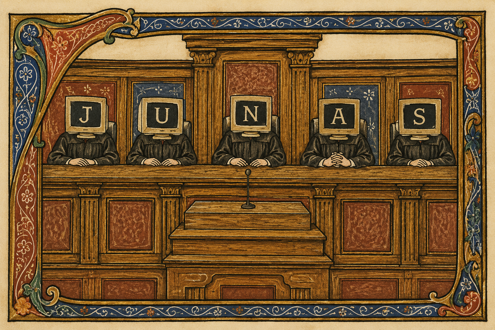

Deterministic pre-send review
Junas reviews risky text before it leaves the workflow.
PII and MNPI findings, policy decisions, required actions, and audit-ready evidence for GenAI prompts, email, and document sharing.

The lead demo blocks a confidential draft.
Verdict
send_allowed: false
policy_decision: block
HIGH_RISK
Required actions
hold_until_public
redact_pii
request_approval
safe_rewrite
Evidence
Legal-basis codes, citation text, request ids, hashes, policy ids, and review expiry stay visible for reviewers.
Built for inspection, not magic.
Deterministic first
Strict review runs without LLM calls or public-evidence lookup.
Backend boundary
Adapters call the FastAPI contract; the backend owns policy and audit evidence.
Rewrite paths
Redact, pseudonymize, hold, cite, request approval, or safe rewrite.
Explicit limits
Not legal advice, not a DLP replacement, not endpoint enforcement.
Run the local demo.
The one-command demo runs the deterministic profile and prints three review verdicts with fake inputs. It does not require provider keys.
git clone https://github.com/gongahkia/junas
cd junas
uv sync --extra dev
uv run python -m spacy download en_core_web_sm
./scripts/demo.sh